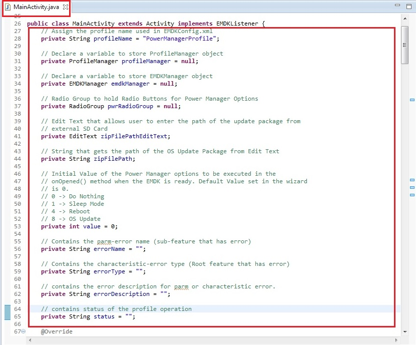
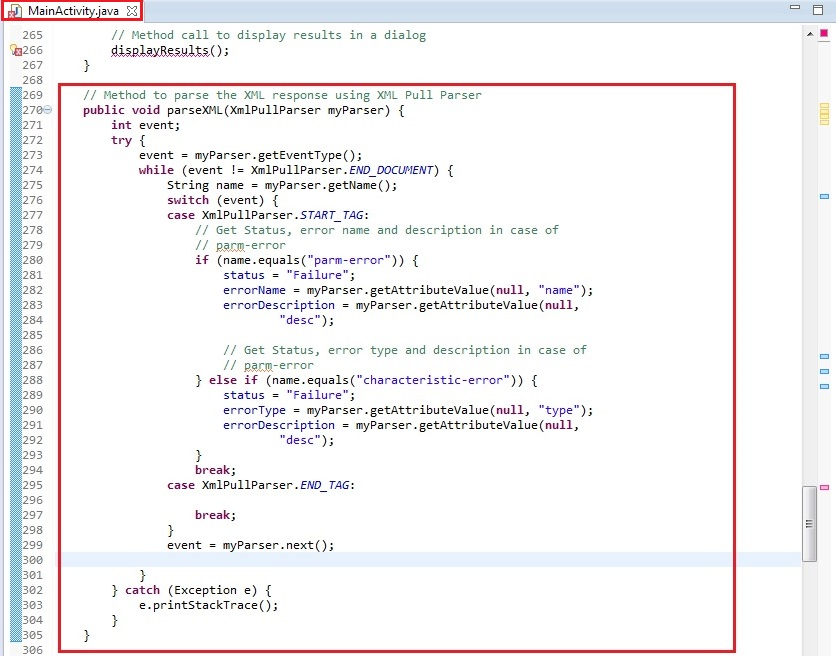
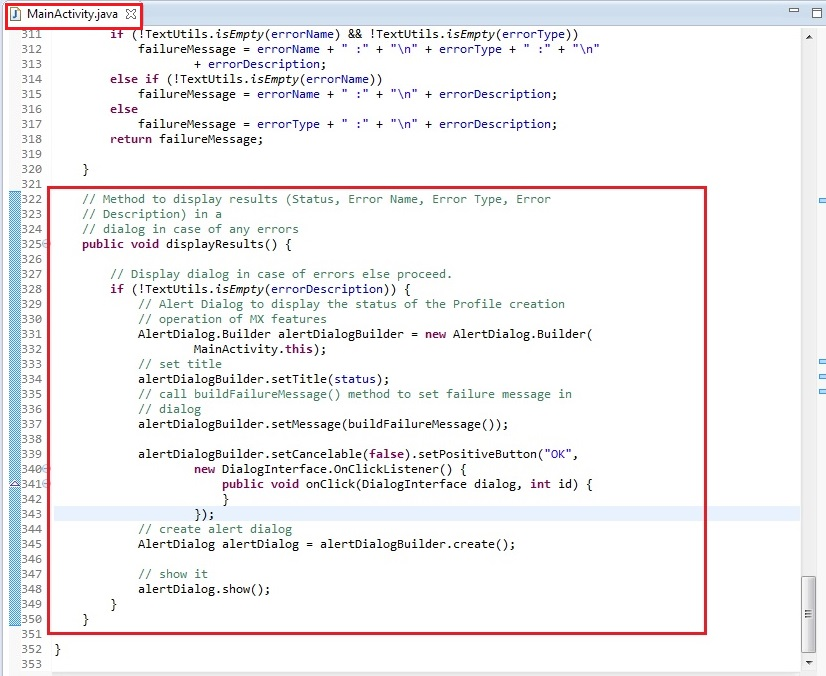
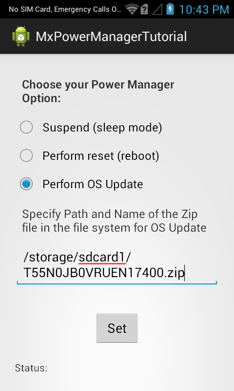
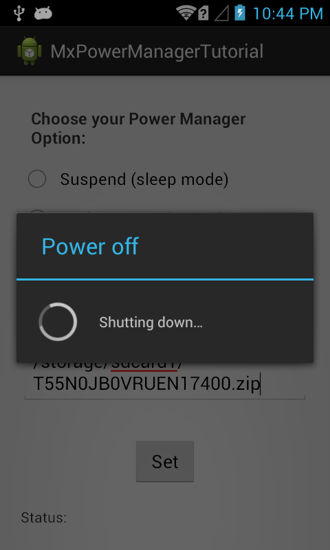

Overview
This guide will walk you through creating an EMDK For Android application that will use MX features introduced in EMDK for Android API to perform device configurations. MX represents a suite of Enterprise Features on top of standard, commercially available Android Open Source Project. So this tutorial will focus on Power Manager API, which allows user to perform Power Management operations on Zebra Android devices. Theses operations include setting the device in sleep mode, rebooting the device and updating device Operating System as follows:
1. Sleep Mode:
This feature allows device to enter the sleep mode in order to conserve power.
2. Device Reboot:
Device Reboot feature restarts the Zebra device from the app itself.
3. OS Update:
This Power Manager feature allows you to update the operating system of your Zebra Android device. The user needs to provide path of update package (zip file) that resides in the device's external SD Card. Based on the package (zip file), the user can perform following operations using OS Update feature:
Note: Copy the update package to external SD Card in order to make update OS work. If you copy update package to the internal SD card of the device, the OS Update feature won't work.
- Enterprise Reset: Resets the device data except MX Enterprise Packages.
- Factory Reset: Resets the device data.
- Full Device Wipe: Performs a full device wipe. Supported on Zebra devices with KitKat version.
- OS Upgrade: Upgrades/Downgrades device's Operating System.
In this tutorial, We would be implementing all three features of Power Manager to understand how they work.
Prerequisites
- Download the respective OS update/Factory Reset/Enterprise Reset package (zip file) from here and copy that file to external SD card of the device.
Note: This above link provides the Update Packages of TC55 device only, which we have used in this tutorial. If you are using some other Zebra Android device then download the respective update package from here
Creating The Project
Note: Provide "MxPowerManagerTutorial" as the project name for this tutorial.
Start by creating a new Android Studio project.
Adding The Power Manager Profile Feature
Click here to see how to add a specific feature to the Profile Manager.
Provide "PowerManagerProfile" as the Profile Name for this tutorial.
Note: You can provide any Profile Name but make sure to access it with the similar name in the Android code.
Now, you can see all these MX features on the left hand side of the Profile Editor window. Select the "Power Manager" feature from the list and click "Right Arrow". Using this feature you can perform various Power Management operations through your apps on the Zebra device. These operations include setting the device into sleep mode , rebooting the device and updating OS of the Zebra Android devices as explained earlier.
Click on the Power Manager feature. The parameter list will be populated.

Now Click on the drop-down of the action field to see the supported features by Power Manager.

There are different features shown in the drop down as explained earlier. As the name suggests, the feature
Do Nothingdoes nothing. We would be configuring above mentioned three features from the application itself. Hence let us select theReset Actionin the wizard asDo Nothing.
Note: You could select any option you want in the wizard and the application will implement that feature on the launch.

Note: Provide some name in the Name field (Ex. MyPowerManager) in order to refer that specific feature of Profile. You can also keep Name field empty.
Click Apply and Finish.

Click "Close".
Note:
Now the "EMDKConfig.xml" is created under "\assets" folder. This file will contain a definition of all of your profiles that you create.
You can inspect the "EMDKConfig.xml" to see it is reflecting the changes made to the parameters via EMDK Profile Manager GUI earlier. However, it is advised that this file not be manually updated and only be controlled via the Profile Manager. So you can see the entry of the 'Reset Action' parameter of Power Manager feature and the value assigned to it is 0.
Now there are specific values that are assigned to the parameters in Power Manager feature:
- 0 - Do Nothing
- 1 - Sleep Mode
- 4 - Reboot
- 5 - Enterprise Reset
- 6 - Factory Reset
- 7 - Full Device Wipe
- 8 - OS Update
Based on user selection, these values would be assigned against these parameters of the Power Manager feature in EMDKConfig file.
Note: These values are useful when we modify Profile from the application using EMDK API, which we will see shortly in this tutorial.

Enabling Android Permissions
Modify the Application's Manifest.xml to use the EMDK library and to set permission for the EMDK.

You must first enable permissions for 'com.symbol.emdk.permission.EMDK':
<uses-permission android:name="com.symbol.emdk.permission.EMDK"/>Then you must enable the library:
<uses-library android:name="com.symbol.emdk"/>When done, your manifest.xml should look like:

Adding Some Code
Now we will start to add some code.
First you must add references to the libraries:
import com.symbol.emdk.*; import com.symbol.emdk.EMDKManager.EMDKListener; import android.widget.Toast;Then you must extend the activity to implement EMDKListener.
public class MainActivity extends Activity implements EMDKListener {
}.. .. .. .. .. .. ... @Override public void onClosed() { // TODO Auto-generated method stub } @Override public void onOpened(EMDKManager emdkManager) { // TODO Auto-generated method stub }We will now create some global variables to hold the profile name as well as instance objects of EMDKManager and ProfileManager. We will also create global variables to hold the UI elements and values that are required in this application. Some of the variables are used to hold the name, type and description in case of any errors. These variables would be used throughout the code.
Note: Verify the Profile name in the code with the one created in the Profile Manager. They both should be identical.
// Assign the profile name used in EMDKConfig.xml private String profileName = "PowerManagerProfile"; // Declare a variable to store ProfileManager object private ProfileManager profileManager = null; // Declare a variable to store EMDKManager object private EMDKManager emdkManager = null; // Text View for displaying status of EMDK operations private TextView statusTextView = null; // Radio Group to hold Radio Buttons for Power Manager Options private RadioGroup pwrRadioGroup = null; // Edit Text that allows user to enter the path of the update package from // external SD Card private EditText zipFilePathEditText; // String that gets the path of the OS Update Package from Edit Text private String zipFilePath; // Initial Value of the Power Manager options to be executed in the // onOpened() method when the EMDK is ready. Default Value set in the wizard // is 0. // 0 -> Do Nothing // 1 -> Sleep Mode // 4 -> Reboot // 5 -> Enterprise Reset // 6 -> Factory Reset // 7 -> Full Device Wipe // 8 -> OS Update private int value = 0; // Contains the parm-error name (sub-feature that has error) private String errorName = ""; // Contains the characteristic-error type (Root feature that has error) private String errorType = ""; // contains the error description for parm or characteristic error. private String errorDescription = ""; // contains status of the profile operation private String status = "";So the code looks like:

In the onCreate method, we call getEMDKManager so that the EMDK can be initialized and checked to see if it is ready.
//The EMDKManager object will be created and returned in the callback. EMDKResults results = EMDKManager.getEMDKManager(getApplicationContext(), this); //Check the return status of getEMDKManager if (results.statusCode == EMDKResults.STATUS_CODE.SUCCESS) {
} else {// EMDKManager object creation success
}// EMDKManager object creation failedSo far your code should look like:

Now we need to use the
onOpenedmethod to get a reference to the EMDKManager. The EMDKListener interface will trigger this event when the EMDK is ready to be used. Hence we will update the status in thestatusTextView. The EMDKListener interface must be implemented in order to get a reference to the EMDKManager APIs. This event will pass the EMDKManager instance and we assign it to the global variableemdkManagerthat we created in the previous steps. We then use that instance object to get an instance of ProfileManager and assign it to the global variableprofileManager. This is how we will interface with the APIs in the rest of the code:Note: Rename the argument of
onOpenedmethod fromarg0toemdkManager// This callback will be issued when the EMDK is ready to use. statusTextView.setText("EMDK open success."); this.emdkManager = emdkManager; // Get the ProfileManager object to process the profiles profileManager = (ProfileManager) emdkManager .getInstance(EMDKManager.FEATURE_TYPE.PROFILE);Now that we have a reference to ProfleManager, we use it to install and activate the profile we built earlier using the
processProfilemethod. We could have also performed this action at a different time, say when someone pressed a button, but we chose to do it as soon as the EMDK was ready:if (profileManager != null) { String[] modifyData = new String[1];
}// Call processPrfoile with profile name and SET flag to create the // profile. The modifyData can be null. EMDKResults results = profileManager.processProfile(profileName, ProfileManager.PROFILE_FLAG.SET, modifyData); if (results.statusCode == EMDKResults.STATUS_CODE.CHECK_XML) { } else { // Show dialog of Failure AlertDialog.Builder builder = new AlertDialog.Builder(this); builder.setTitle("Failure"); builder.setMessage("Failed to apply profile...") .setPositiveButton("OK", new DialogInterface.OnClickListener() { public void onClick (DialogInterface dialog, int id) { } }); AlertDialog alert = builder.create(); alert.show(); }This
processProfilemethod returns the result of applying a particular profile that we set using EMDK Profile Wizard in EMDKResults reference. If the profile is successfully processed, it returns the status asCHECK_XMLand then we go on and parse the response to get further details whether the profile was applied successfully or not. Otherwise we display a Failure message in a dialog.Note: 1. There is a difference between processing a profile successfully and applying a profile successfully.
Note: 2. If the status is other than
CHECK_XML, we are simply displaying a failure message. You can actually go ahead and check different types of status and display the appropriate message accordingly, which is not in the scope of this sample tutorial.In case of
CHECK_XMLstatus, We retrieve XML response string from the result usinggetStatusStringmethod. So we will call a methodhandleEMDKResultto handle this EMDKResults, which we will create in the next step.// Method call to handle EMDKResult handleEMDKResult(results);Your onOpened method should now look like this:

It shows error as we have not yet declared
handleEMDKResultmethod. So let us create this method, which would get the XML String response from EMDKResults, call theparseXMLmethod to parse it and eventually calldisplayResultsmethod to display output in a dialog, which we would be declaring in coming steps.// Method to handle EMDKResult by extracting response and parsing it public void handleEMDKResult(EMDKResults results) { // Get XML response as a String String statusXMLResponse = results.getStatusString();
}try { // Create instance of XML Pull Parser to parse the response XmlPullParser parser = Xml.newPullParser(); // Provide the string response to the String Reader that reads // for the parser parser.setInput(new StringReader(statusXMLResponse)); // Call method to parse the response parseXML(parser); } catch (XmlPullParserException e) { e.printStackTrace(); } // Method call to display results in a dialog displayResults();Your
handleEMDKResultmethod should now look like this:
You will see few errors as we have not declared the respective methods to parse the response and display result. Lets do it one by one. In this step, we will create a method
parseXMLthat uses XML Pull Parser to parse the XML string response and set the status and error parameters if any.In the response, we are supposed to capture
nameanddescforparm-errortag,typeanddescforcharacteristic-errortag in case of any errors.// Method to parse the XML response using XML Pull Parser public void parseXML(XmlPullParser myParser) { int event; try { event = myParser.getEventType(); while (event != XmlPullParser.END_DOCUMENT) { String name = myParser.getName(); switch (event) { case XmlPullParser.START_TAG: // Get Status, error name and description in case of // parm-error if (name.equals("parm-error")) { status = "Failure"; errorName = myParser.getAttributeValue(null, "name"); errorDescription = myParser.getAttributeValue(null, "desc");
}// Get Status, error type and description in case of // parm-error } else if (name.equals("characteristic-error")) { status = "Failure"; errorType = myParser.getAttributeValue(null, "type"); errorDescription = myParser.getAttributeValue(null, "desc"); } break; case XmlPullParser.END_TAG: break; } event = myParser.next(); } } catch (Exception e) { e.printStackTrace(); }Your complete
parseXMLmethod should now look like:
You will still see one error as we need to declare
displayResultsmethod to display the result of profile operation in a dialog. Before displaying the results, we should form the content of the result to be shown first, specifically in case of errors. This could be done by creatingbuildFailureMessagemethod.In this method, the error message in case of error is formed using following way:
- Name and description of error if the response contains
parm-error. - Type and description of error if the response contains
characteristic-error. - Name, type and description of error if the response contains both
parm-errorandcharacteristic-error.
The
buildFailureMessagemethod would have following code to match the above mentioned criteria.// Method to build failure message that contains name, type and // description of respective error (parm, characteristic or both) public String buildFailureMessage() { String failureMessage = ""; if (!TextUtils.isEmpty(errorName) && !TextUtils.isEmpty(errorType)) failureMessage = errorName + " :" + "\n" + errorType + " :" + "\n" + errorDescription; else if (!TextUtils.isEmpty(errorName)) failureMessage = errorName + " :" + "\n" + errorDescription; else failureMessage = errorType + " :" + "\n" + errorDescription; return failureMessage; }buildFailureMessagemethod should look like:
- Name and description of error if the response contains
In this step, we will add
displayResultsmethod to display the result of profile operation. If the Profile is successfully applied, it will proceed with the respective power manager operation and in case of any errors, we will display a dialog with the corresponding error details.// Method to display results (Status, Error Name, Error Type, Error // Description) in a // dialog in case of any errors public void displayResults() { // Display dialog in case of errors else proceed. if (!TextUtils.isEmpty(errorDescription)) { // Alert Dialog to display the status of the Profile creation // operation of MX features AlertDialog.Builder alertDialogBuilder = new AlertDialog.Builder( MainActivity.this); // set title alertDialogBuilder.setTitle(status); // call buildFailureMessage() method to set failure message in // dialog alertDialogBuilder.setMessage(buildFailureMessage());
} }alertDialogBuilder.setCancelable(false).setPositiveButton("OK", new DialogInterface.OnClickListener() { public void onClick(DialogInterface dialog, int id) { } }); // create alert dialog AlertDialog alertDialog = alertDialogBuilder.create(); // show it alertDialog.show();The method
displayResultsshould look like:
You can see that all the errors are gone.
Now let's override the "onDestroy" method so we can release the EMDKManager resources:
@Override protected void onDestroy() { // TODO Auto-generated method stub super.onDestroy(); //Clean up the objects created by EMDK manager emdkManager.release(); }Your onDestroy method should now look like this:

Let us set the required layout/View for this tutorial. Remove all the code, inside "res/layout/activity_main.xml".
Add the following code that has three radio buttons that enable user to select a specific Power Manager feature, an Edit Text that allows user to enter the external SD Card path to the OS update package (zip file), a Text View that displays the status of every operation the user performs and a Button that triggers the user selected Power Manager feature and configures the device based on that.
Note: Copy the update package to external SD Card in order to make update OS work. If you copy update package to the internal SD card of the device, the OS Update feature won't work.
<RelativeLayout xmlns:android="http://schemas.android.com/apk/res/android" xmlns:tools="http://schemas.android.com/tools" android:layout_width="match_parent" android:layout_height="match_parent" android:layout_margin="20dip" tools:context=".MainActivity" > <LinearLayout android:id="@+id/linearLayout1" android:layout_width="wrap_content" android:layout_height="wrap_content" android:layout_alignParentLeft="true" android:layout_alignParentRight="true" android:layout_alignParentTop="true" android:orientation="vertical" > </LinearLayout> <TextView android:id="@+id/textView1" android:layout_width="wrap_content" android:layout_height="wrap_content" android:layout_alignLeft="@+id/linearLayout1" android:layout_alignRight="@+id/linearLayout1" android:layout_below="@+id/buttonSet" android:layout_marginTop="20dp" android:text="Status:" /> <RadioGroup android:id="@+id/radioGroupPwr" android:layout_width="wrap_content" android:layout_height="wrap_content" android:layout_alignLeft="@+id/linearLayout1" android:layout_alignTop="@+id/linearLayout1" > <TextView android:layout_width="wrap_content" android:layout_height="wrap_content" android:layout_margin="10dip" android:text="Choose your Power Manager Option:" android:textSize="16sp" android:textStyle="bold" /> <RadioButton android:id="@+id/radioSuspend" android:layout_width="279dp" android:layout_height="wrap_content" android:text="Suspend (sleep mode)" /> <RadioButton android:id="@+id/radioReset" android:layout_width="match_parent" android:layout_height="wrap_content" android:text="Perform reset (reboot)" /> <RadioButton android:id="@+id/radioOSUpdate" android:layout_width="match_parent" android:layout_height="wrap_content" android:text="Perform OS Update" /> <TextView android:layout_width="wrap_content" android:layout_height="wrap_content" android:layout_margin="10dip" android:text="Specify Path and Name of the Zip file in the file system for OS Update" android:textSize="16sp" /> <EditText android:id="@+id/et_zip_file_path" android:layout_width="match_parent" android:layout_height="wrap_content" android:hint="Path and Name of Zip file" android:maxLines="2" /> </RadioGroup> <Button android:id="@+id/buttonSet" android:layout_width="wrap_content" android:layout_height="wrap_content" android:layout_below="@+id/radioGroupPwr" android:layout_centerHorizontal="true" android:layout_marginTop="32dp" android:text="Set" /> <TextView android:id="@+id/textViewStatus" android:layout_width="wrap_content" android:layout_height="wrap_content" android:layout_alignLeft="@+id/textView1" android:layout_alignRight="@+id/textView1" android:layout_below="@+id/textView1" /> </RelativeLayout>The layout file 'activity_main.xml' should now look like:

Get the reference of UI elements and make a call to 'addSetButtonListener' method in 'onCreate' method. We would add this method in the next step. The method 'addSetButtonListener' creates on Click Listener for the Set Button that implements Power Manager settings selected by user.
// References of the UI elements statusTextView = (TextView) findViewById(R.id.textViewStatus); pwrRadioGroup = (RadioGroup) findViewById(R.id.radioGroupPwr); zipFilePathEditText = (EditText) findViewById(R.id.et_zip_file_path); // Set on Click listener to the set button to execute Power Manager // operations addSetButtonListener();So the complete
onCreatemethod looks like:
It shows an error on the method call of 'addSetButtonListener' because we have not yet added this method. We would now add the 'addSetButtonListener' method that implements on click listener of the radio buttons that are assigned to each of the Power Manager feature. As explained earlier, it sets an integer code (1-Sleep, 4-Reboot or 8-OS Update) in the variable 'value' and then calls 'modifyProfile_XMLString' method that actually modifies the Profile settings based on this value and configures the device against that Power Manager feature.
// Method to set on click listener on the Set Button private void addSetButtonListener() { // Get Reference to the Set Button Button setButton = (Button) findViewById(R.id.buttonSet); // On Click Listener setButton.setOnClickListener(new OnClickListener() {
}); }@Override public void onClick(View arg0) { // TODO Auto-generated method stub // Get Reference to the Radio Buttons that show various Power // Manager Options int radioid = pwrRadioGroup.getCheckedRadioButtonId(); if (radioid == R.id.radioSuspend) value = 1; // 1 - Suspend/ Sleep Mode (Set device to the // sleep mode) if (radioid == R.id.radioReset) value = 4; // 4 - Perform Reset/Reboot (Reboot Device) if (radioid == R.id.radioOSUpdate) value = 8; // 8 - Perform OS Update // Apply Settings selected by user modifyProfile_XMLString(); }So the method looks like:

The above code would display error at the call of
modifyProfile_XMLStringmethod as we have not added that method yet. This is the method that actually modifies the Power Manager Profile Settings and configures the device with the user selected Power Manager feature (Sleep Mode, Reboot or OS Update). This method prepares the xml input for theprocessProfilemethod based on "value" attribute. If the value is 1 or 4 (Sleep Mode or Reboot), then the XML input remains the same except value attribute. If the value is 8 (OS Update), we need to add path to the OS Update package in XML input. So the XML input for this case would be different as explained in theIf-Elsecondition of the code. We would capture that path from the Edit Text and store it to thezipFilePathvariable. It then callshandleEMDKResultmethod and sets the profile by following similar steps as explained in case ofonOpenedmethod.Following is an example of XML input for OS Update feature of Power Manager where the
zipFilePathvariable contains the path of the update package.modifyData[0] = <?xml version=\"1.0\" encoding=\"utf-8\"?>" + "<characteristic type=\"Profile\">" + "<parm name=\"ProfileName\" value=\"PowerManagerProfile\"/>" + "<characteristic type=\"PowerMgr\">" + "<parm name=\"ResetAction\" value=\"" + value + "\"/>" + "<characteristic type=\"file-details\">" + "<parm name=\"ZipFile\" value=\"" + zipFilePath + "\"/>" + "</characteristic>" + "</characteristic>" + "</characteristic>The
processProfilemethod then sets the changes toProfile Managerand returns the result to theEMDKResults.// Method that applies the modified settings to the EMDK Profile based on // user selected options of Power Manager feature. private void modifyProfile_XMLString() { // Prepare XML to modify the existing profile String[] modifyData = new String[1]; if (value == 8) { zipFilePath = zipFilePathEditText.getText().toString(); // If the OS Package path entered by user is empty then display // a Toast if (TextUtils.isEmpty(zipFilePath)) { Toast.makeText(MainActivity.this, "Incorrect File Path...", Toast.LENGTH_SHORT).show(); return; }
} else { // Modified XML input for Sleep and Reboot feature based on user // selected options of radio button // value = 1 -> Sleep Mode // value = 4 -> Rebbot modifyData[0] = "<?xml version=\"1.0\" encoding=\"utf-8\"?>" + "<characteristic type=\"Profile\">" + "<parm name=\"ProfileName\" value=\"PowerManagerProfile\"/>" + "<characteristic type=\"PowerMgr\">" + "<parm name=\"ResetAction\" value=\"" + value + "\"/>" + "</characteristic>" + "</characteristic>"; } // Call process profile to modify the profile of specified profile // name EMDKResults results = profileManager.processProfile(profileName, ProfileManager.PROFILE_FLAG.SET, modifyData); if (results.statusCode == EMDKResults.STATUS_CODE.CHECK_XML) { // Method call to handle EMDKResult handleEMDKResult(results); } else { // Show dialog of Failure AlertDialog.Builder builder = new AlertDialog.Builder(this); builder.setTitle("Failure"); builder.setMessage("Failed to apply profile...").setPositiveButton( "OK", new DialogInterface.OnClickListener() { public void onClick(DialogInterface dialog, int id) {// Modified XML input for OS Update feature that contains path // to the update package modifyData[0] = "<?xml version=\"1.0\" encoding=\"utf-8\"?>" + "<characteristic type=\"Profile\">" + "<parm name=\"ProfileName\" value=\"PowerManagerProfile\"/>" + "<characteristic type=\"PowerMgr\">" + "<parm name=\"ResetAction\" value=\"" + value + "\"/>" + "<characteristic type=\"file-details\">" + "<parm name=\"ZipFile\" value=\"" + zipFilePath + "\"/>" + "</characteristic>" + "</characteristic>" + "</characteristic>";
} }} }); AlertDialog alert = builder.create(); alert.show();You can see that the error is gone once we add this method. The method
modifyProfile_XMLStringmethod should look like:
If the EMDK is closed abruptly, a callback method
onClosedgets called, where you could release yourEMDKManager.
That's it!!! We are done with all the coding and configuration part. Now let us run the application.
Running the Application
- Connect the device to a USB port (device must have USB debugging enabled).
Note:
Make sure the device is in USB debug.
Run the application. Since we have set
Do Nothingparameter in the Profile Manager wizard, the app just loads and performs no operations. So you can see the main page with three radio button options (Sleep Mode, Reboot and OS Update).
Now we will select these options one by one. So select "Suspend" radio button and press the "Set" button. This will put your device into sleep mode by locking it.

As you can see, the device has been locked. So unlock it and the app will be resumed.

So now select second option (Reboot) and press the "Set" button. This should reboot your Zebra Android device.

As the device was rebooted in the previous step, open the app again and select the third option (OS Update). Provide the path in the Edit Text to the external SD card where the OS Update Package is located. This package should be a zip file downloaded from this link (Ex. /sdcard/T55N0JB0VRUEN17400.zip).
Note: This above link provides the Update Packages of TC55 device only. If you are using some other Zebra Android device then download the respective update package from here
This package could be an OS upgrade, Factory Reset or Enterprise Reset package as this feature allows you to perform all these operations. We will be using an update Package that has been downloaded from above link for TC55 device.

Once the "Set" button is pressed, the phone will shut down for performing OS update with the respective update package.
Note: In case of failure due to incorrect path, the app will display a failure message in the status Text View at the bottom.

Finally the device reboots to configure and apply the OS update changes.
Important Programming Tips
Perform the following changes in the application's
AndroidManifest.xmlfile://Include the permission for EMDK: <uses-permission android:name="com.symbol.emdk.permission.EMDK"/> //Use the EMDK library: :::xml <uses-library android:name="com.symbol.emdk"/>Use DataWedge v1.7.12 or higher version to test the
ProfileManager.processProfile()method for DataWedge profiles.
What's Next
Now that you have learned how to configure and perform Power Management operations on your Zebra Android devices through applications using MX Power Manager feature, let us try to understand and implement some of the other MX features. So in the next tutorial, we will concentrate on the "Persist Manager" feature and try to explore this feature by creating a tutorial.